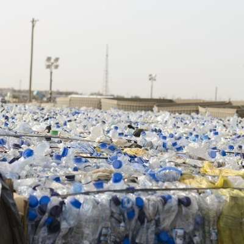
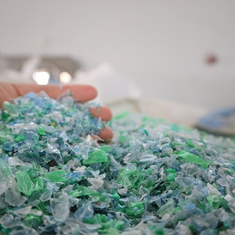
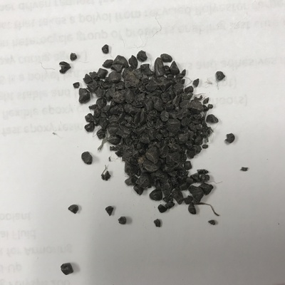
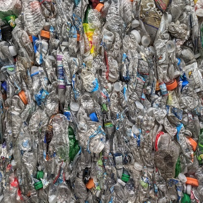
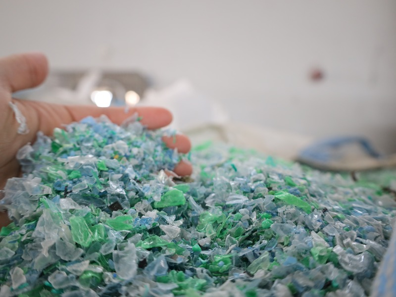
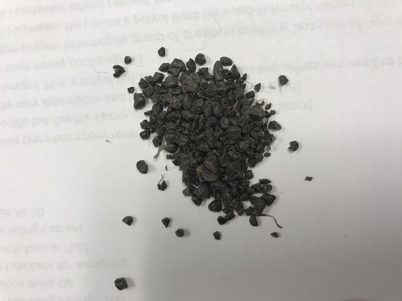

PolyRevive Innovation Private Limited is building a modern PET recycling ecosystem focused on converting post-consumer PET waste into high-quality recycled materials while creating environmental, economic, and social value.
Advanced PET recycling solutions
High-quality recycled PET flakes and pellets
Sustainable waste-to-resource model
Responsible water and waste management
Circular economy focused
B2B industrial supply
PolyRevive Innovation Private Limited is an emerging recycling enterprise focused on the collection, processing, and transformation of post-consumer PET waste into valuable recycled materials.
By combining modern recycling technology, efficient processing systems, responsible resource management, and strong supply-chain partnerships, PolyRevive aims to develop a scalable and sustainable PET recycling operation.
Learn More About UsTo become a trusted and technologically driven PET recycling company contributing to a cleaner environment and a stronger circular economy.
To transform discarded PET bottles into high-quality recycled materials through efficient, responsible, and sustainable recycling practices.




Our operations are designed around the complete PET recycling value chain.
Collection
Sorting
Processing
Washing
Separation
Drying
Flake Production
Pellet Production
Quality Control
B2B Supply
We work toward establishing an efficient supply network that connects PET waste generators, collection partners, recycling operations, and end-use industries.
High-purity recycled polymers engineered for consistency, performance, and circular manufacturing.

High-quality recycled PET flakes produced from post-consumer PET waste after sorting, washing, separation, and processing.

Processed recycled PET material designed for industries requiring consistent recycled polymer feedstock.
LET'S BUILD A CLEANER, GREENER TOMORROW
We welcome conversations with raw material suppliers, industrial buyers, technology partners, logistics partners, institutional and municipal organizations, investors and strategic partners.
Whether you are a customer, supplier, investor, technology provider, or strategic partner, we would like to hear from you.
Recycled PET products and industrial requirements.
PET scrap and raw-material supply networks.
Technology, logistics, institutional, and strategic collaborations.
Conversations with investors and strategic partners.